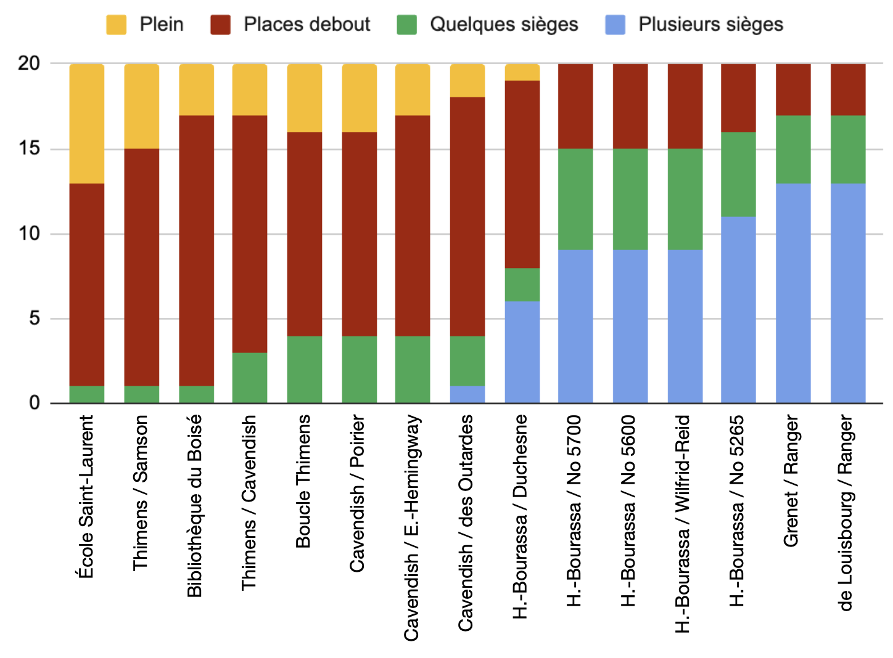

La ligne 171 est désormais remplacée par la ligne 177, maintenant aux 30 minutes vers l'est le matin et vers l'ouest l'après-midi vers un quartier industriel. Outre la diminution de fréquence, l'accès au quartier résidentiel du Nouveau Bois-Franc est également perdu pour les étudiants de cette école. Un nouveau trajet doit être établi en suivant le tracé de l'actuelle ligne 171 prolongée.
Par ailleurs, l'achalandage observé actuellement sur le premier départ de la ligne 171 prolongée l'après-midi montre une utilisation élevée; presque plein. De plus, l'utilisation de la ligne 171 semble provenir d'une clientèle local dans Bois-Franc. La figure ci-dessous démontre la part des niveaux de charges pour ce voyage (identifiant 294188962), pour tous les jours où des données ont été enregistrées :

Il est suggéré de créer un 127E, avec un départ le matin et un départ l'après-midi. Par souci d'économie de budget, la création de ce trajet peut se faire en supprimant un ou deux départ de 64E pour cette école en pointe du matin, puisque l'accès vers le REM Bois-Franc sera bonifié avec la ligne 127E. Le tracé suggéré est présenté ci-dessous :